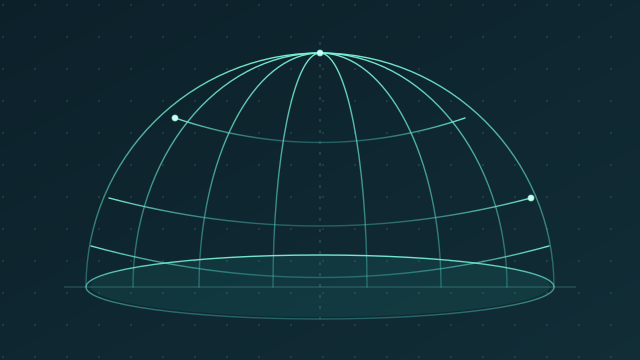
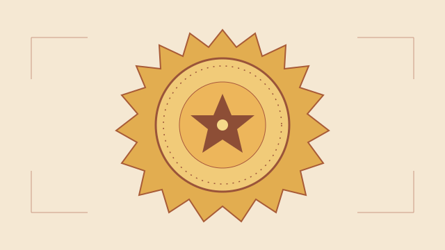
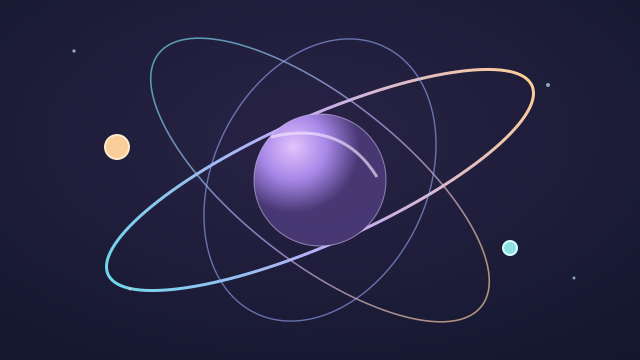
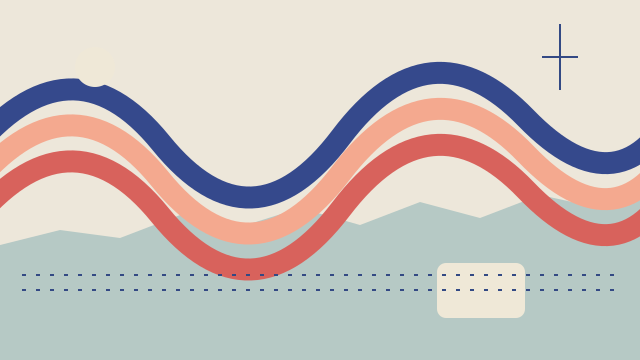
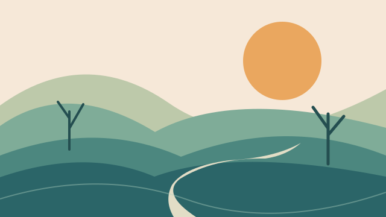
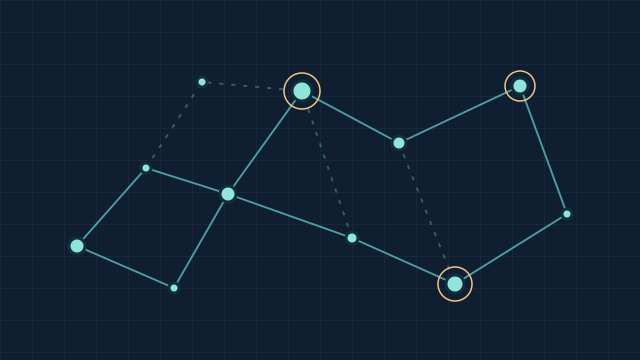

VG-001 · Wireframe Dome
科幻球壳 · 技术视觉
查看独立 SVG每项均为独立、真实存在的 SVG 源文件，可直接引用或编辑。无第三方图片、在线字体和外部资源；本页仅供展示，不是完整站点构建器。

科幻球壳 · 技术视觉
查看独立 SVG
复古印章 · 文化展陈
查看独立 SVG
轨道循环 · 空间语言
查看独立 SVG
波形拼贴 · 活泼图形
查看独立 SVG
剪纸山水 · 有机材质
查看独立 SVG
星图网络 · 数据视觉
查看独立 SVG